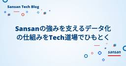
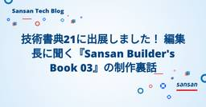

Sansan Tech Blog
https://buildersbox.corp-sansan.com/
Sansanのものづくりを支えるメンバーの技術やデザイン、プロダクトマネジメントの情報を発信
フィード

【情シス×MDM運用】Jamf ProとIntuneのCIS Benchmarks実践記 — Mac 1000台・Windows 2000台での計測・適用とハマりポイント
Sansan Tech Blog
目次 この記事の想定読者 1. はじめに 2. 全体像：進め方と、「使う」「つくる」の分岐 2-1 プロジェクトの全体像 2-2 調査で見えた分岐：「使う」と「つくる」 2-3 トリアージ：採否の判断基準 3. Jamf編 3-1 Jamf Proの標準機能「Compliance Benchmarks」を使う 3-2 計測：まずは［監視のみ］ 3-3 設定適用：グループで段階展開 3-4 ハマりポイント：Compliance Benchmarksを利用する上での実務Tips 3-5 Jamf編のまとめ：Jamf Pro「Compliance Benchmarks」を実際に使ってみて 4. In…
1日前

Sansanの強みを支えるデータ化の仕組みをTech道場でひもとく
Sansan Tech Blog
研究開発部 兼 Tech道場 道場主の川波です。 今回はTech道場という社内での取り組みについてお話しします。 Tech道場は2015年に始まった社内勉強会です。「Techに触れよう」をコンセプトに職種を越えて交流し、プロダクトを支える技術への理解を深めることを目指しています。Sansan Tech Blog「Tech 道場再始動しました！」 今回取り上げたのはSansanやEight、Contract Oneといったプロダクトを支える「データ化」です。社内から届いた仕組みや強みをもっと知りたいという声を受け、2026年1月から10月にかけて3名の登壇者を迎えた全3回のシリーズを開催しました…
1日前

技術書典21に出展しました！ 編集長に聞く『Sansan Builder's Book 03』の制作裏話
Sansan Tech Blog
Sansanは2026年11月23日（月・祝）、池袋サンシャインシティで開催された「技術書典21」にシルバースポンサーとして出展しました。スポンサーとしての出展は今回が初めてです。 会場では、有志のメンバーが執筆した『Sansan Builder's Book 03』を頒布しました。本記事では当日の様子と、本書の編集長を務めた川波に聞いた制作の裏側を紹介します。 当日のブースの様子 『Sansan Builder's Book 03』について 編集長・川波に聞く、制作の裏側 発信をきっかけに、人とつながりたい 初参加で、調べながら進めた本づくり 書き手のよさを残す編集 一冊を作る中で生まれた、…
3日前

技術を磨くその先へ。 Eightの仲間と「作って届ける」を楽しむ
Sansan Tech Blog
キャリアは、選択の積み重ねでできています。 どんな経験を経て、なぜSansanを選び、いまどんな挑戦に向き合っているのか。「Sansan 3 Stories」では、これまでの歩みと、実際にSansanで働いて感じたこと、そしてこれからの挑戦を「過去・現在・未来」の3つのストーリーでお届けします。今回は、名刺アプリ「Eight」のAndroidアプリ開発に携わる若田に話を聞きました。 若田 直希 / Naoki WakataEight Engineering Unit Mobile Applicationグループ北海道大学大学院で画像解析を研究する傍ら、Flutterによるモバイルアプリ開発を始…
3日前

OpenID TechNight vol.24 ~ SSF × AIdentity に登壇しました
Sansan Tech Blog
こんにちは、技術本部Platform Engineering Unit Identity Platformグループの輿石です。 2026年11月9日に開催された「OpenID TechNight vol.24 ~ SSF × AIdentity」に、同グループの都筑と登壇しました。 OpenID TechNightは、認証・認可やID管理に関する技術を共有するイベントで、今回は連携する事業者・システム間でセキュリティイベントを共有する標準仕様「Shared Signals Framework（SSF）」と、AIエージェントなどのID管理を扱う「AIdentity」がテーマでした。 openid…
5日前

CloudNative Days Winter 2026に参加しました
Sansan Tech Blog
2026年11月18日（水）・19日（木）に有明セントラルタワーホール&カンファレンスで開催された「CloudNative Days Winter 2026」に、Sansan株式会社として参加しました。本記事では、イベントの様子や参加メンバーが特に印象に残ったセッションをご紹介します。 cloudnativedays.jp CloudNative Days Winter 2026とは CloudNative Daysは、クラウドネイティブ領域に関するテックカンファレンスです。 Sansanからは、クラウドネイティブ技術を活用したプラットフォームエンジニアを中心に参加しました。 懇親会スポンサー…
9日前
研究を、顧客に届く価値へ。 博士進学と迷った末に選んだ、Sansanでの挑戦
Sansan Tech Blog
Sansan株式会社では、新卒入社のエンジニア・研究員たちが数多く活躍しています。なぜSansanを選び、入社後にどんな経験を積み、これから何を目指しているのか。「Sansan Sakura Stories」では、その「過去・現在・未来」を通して、一人ひとりの等身大の姿をお届けします。今回のインタビューでは、2024年に新卒入社し、研究開発部でメール署名取り込みの性能改善や契約書解析に取り組む大田尾に話を聞きました。 大田尾 匠 / Sho Otao研究開発部 Data Analysisグループ京都大学大学院情報学研究科修士課程を修了後、2024年にSansan株式会社へ新卒入社。在学中は、確…
10日前
YAPC::Tokyo 2026にGold Sponsorとして協賛します！
Sansan Tech Blog
Sansan株式会社は、「YAPC::Tokyo 2026」にGold Sponsorとして協賛します！ 本記事では、YAPC::Tokyo 2026への協賛の背景と、Sansanメンバーの登壇情報をご紹介します。 YAPC::Tokyo 2026について YAPC::Tokyo 2026は、一般社団法人Japan Perl Associationが主催する技術カンファレンスです。Perlに限らず、さまざまな技術や開発の知見を共有し、参加者同士が交流する場となっています。 今回のテーマは「パッチワーク」。エンジニア一人ひとりの日々の営みを起点に、多様な技術や人々がつながる場を目指しています。 …
11日前
FlutterKaigi 2026で「AIにも人間にも優しいFlutterアプリ設計」について登壇しました
Sansan Tech Blog
こんにちは。技術本部Bill One EXプロダクト開発部Mobile Applicationグループの山下です。 会場に足を運んでくださった方、本当にありがとうございました。 登壇の背景 私は2022年のFlutterKaigiで「Flutterアプリ開発におけるモジュール分割戦略」というテーマで登壇しました。当時は、約15万行のコードを約100個のパッケージに分けて開発する話をしました。 あれから4年が経ちました。今回は、経理AXサービス「Bill One」のモバイルアプリ開発で2025年夏から採用している新しいアーキテクチャを紹介しました。2022年の経験から得た教訓を反映し、AI Ag…
12日前
培った技術を、仕組みと人に残す。 Sansanで挑むセキュリティのこれから
Sansan Tech Blog
キャリアは、選択の積み重ねでできています。 どんな経験を経て、なぜSansanを選び、いまどんな挑戦に向き合っているのか。「Sansan 3 Stories」では、これまでの歩みと、実際にSansanで働いて感じたこと、そしてこれからの挑戦を「過去・現在・未来」の3つのストーリーでお届けします。今回は、情報セキュリティ部でインシデント対応やAIを活用した防御の仕組みづくりに取り組む長谷川に話を聞きました。 長谷川 達也 / Tatsuya Hasegawa情報セキュリティ部2009年に大学の研究でサイバーセキュリティの道へ。通信事業者でSOCサービス開発・運用、ユーザー企業でCSIRTとしてイ…
12日前
技術書典21にシルバースポンサーとして出展し、新刊「Sansan Builder’s Book 03」を頒布します
Sansan Tech Blog
Sansanは、2026年11月23日(月・祝)に池袋サンシャインシティで開催される「技術書典21」に、シルバースポンサーとして出展します。あわせて、有志のエンジニアとデザイナーが執筆した技術書「Sansan Builder's Book 03」を頒布します。 Sansanがスポンサーとして技術書典に参加するのは、今回が初めてです。会場のブースでは、執筆メンバーが書籍の内容や、日々の開発で得た知見についてお話しします。 Sansan Builder's Book 03の冊子イメージ 技術書典21の開催概要とSansanのブース 技術書典21は、会場でのオフライン開催とオンライン開催の2本立てで…
17日前
Kotlin Fest 2026にSponsor（Silver Plan）として協賛します！
Sansan Tech Blog
Sansan株式会社は、「Kotlin Fest 2026」にSponsor（Silver Plan）として協賛します！ 本記事では、Kotlin Fest 2026への協賛の背景と、Sansanのエンジニアによる登壇情報をご紹介します。
17日前
FlutterKaigi 2026の応援LTに登壇しました
Sansan Tech Blog
こんにちは、技術本部 Bill One EX プロダクト開発部 Mobile Applicationグループに所属しているヤズジュ夢佐です。 2026年10月29日〜30日に開催されたFlutterKaigi 2026の応援LTのコーナーで登壇しました。
18日前
pmconf 登壇者を社内オーディションで選んだら、「PdMとしての言語化」を学び直せた話
Sansan Tech Blog
こんにちは。顧客マスターマネジメント「Sansan Data Intelligence」でプロダクトオーナー（PO）をしている猿田です。 Sansan株式会社は、プロダクトマネージャーカンファレンス 2026（pmconf 2026）に協賛しています。 すでに開催された福岡会場に続き、東京・大阪の両会場にもスポンサーとして参加します。 そのうち、2026年12月11日（金）開催の大阪会場でのスポンサーセッションに登壇するメンバーを、全プロダクト合同の社内オーディションで決めました。9件の応募から書類による1次審査、5名による最終審査（10分間のピッチ）を経て、SDIプロダクト室のプロダクトマネ…
18日前
名刺管理の先に、新しいキャリア体験を。Eight Career Designが現場の知見をAIに生かすまで
Sansan Tech Blog
名刺アプリ「Eight」では、名刺アプリとして培ってきたユーザー基盤やデータを生かし、キャリア領域での新しい体験づくりに取り組んでいます。その一つが、企業とEightユーザーをつなぐプロフェッショナルリクルーティング「Eight Career Design」です。今回は、Eightのプロダクト開発を担う安藤と、研究開発部の本田に、現場の知見を生かした「AI候補者検索」の開発での連携や、今後目指すキャリア体験について話を聞きました。 安藤琢哉 / Takuya Ando Eight事業部 プロダクト部 部長新卒でアドテク企業に入社し、商品企画・事業企画を担当。その後、Webメディア企業での事業企…
18日前
OAuth／OIDCライブラリの内製化で見えたGoのpackageとinterface
Sansan Tech Blog
技術本部Platform Engineering Unit Identity Platformグループの輿石です。 2026年に新卒入社し、弊社が提供する経理AXサービス「Bill One」や契約AXサービス「Contract One」などのプロダクトが利用する共通認証基盤「Auth One」の開発と運用に携わっています。 Sansan株式会社では、Goに関する技術発信に積極的に取り組んでおり、カンファレンスへの参加や社外での登壇などを通じて、日々の開発で得た知見を発信しています。 2026年9月11日に開催されたGo Conference 2026でも、社内から数多くのプロポーザルを提出しま…
20日前
CloudNative Days Winter 2026に懇親会スポンサーとして協賛します
Sansan Tech Blog
Sansan株式会社は、2026年11月18日（水）・19日（木）に開催される「CloudNative Days Winter 2026」に、懇親会スポンサーとして協賛します。 CloudNative Daysは、クラウドネイティブ領域に関するテックカンファレンスです。Sansanからは、クラウドネイティブ技術を活用したプラットフォームエンジニアを中心に参加を予定しています。
22日前
BigQuery Remote Functionsの評価ステージを見直して、Cloud RunへのHTTPリクエストを約74%削減した話
Sansan Tech Blog
こんにちは、技術本部 Data Intelligence Engineering Unit Master Dataグループの井脇です。普段はデータ基盤まわりの開発・運用に携わっています。 日々のデータ基盤運用では、SQLが期待どおりに結果を返していても、外部サービスの呼び出し方によって負荷やコストが膨らむことがあります。今回は、BigQuery Remote FunctionsからCloud Run上のAPIを呼び出す、日次で実行する定期バッチで、その負荷とコストを見直したときの話です。
22日前
2026年11月技術イベント予定
Sansan Tech Blog
Sansan株式会社では、技術イベントや勉強会の主催・登壇・協賛を行っています。 各イベントの詳細については、以下のリンクからご確認ください。 ※開催状況により、すでに受付を終了している場合がございます。 ※掲載している内容は公開当時の情報です。最新情報は各イベントページをご確認ください。
23日前
AIを活用しながら専門性も磨き続ける。 Sansanが取り組むセキュリティの新たな仕組み
Sansan Tech Blog
セキュリティの専門性を、プロダクトを作る現場でどう生かすか。Sansanの情報セキュリティ部では、開発チームと協力して対策を進めながら、AIを使った業務の自動化にも取り組んでいます。今回のインタビューでは、セキュリティエンジニアとして働く田中に、ベンダーからSansanへ転職した理由と、専門性を生かしたセキュリティの仕組みづくりについて聞きました。 田中 悠一郎 / Yuichiro Tanaka 情報セキュリティ部 Product Securityグループ2016年にセキュリティベンダーに入社し、セキュリティエンジニアとして複数の領域のセキュリティ診断やペネトレーションテストなどに従事。 2…
23日前
EightのエンジニアでKaigi on Rails 2026に参加してきました！
Sansan Tech Blog
こんにちは！名刺アプリ「Eight」でエンジニアをしている丸川です。 10月16日・17日に開催されたKaigi on Rails 2026に、Eightのエンジニアメンバーで参加してきました。今回はそれぞれのメンバーがKaigi on Railsの感想や印象に残ったセッションについてレポートしていきます。
24日前
Contract Oneの全文検索を評価する基盤を作成した（インターン成果報告）
Sansan Tech Blog
はじめに 技術本部 Contract One Engineering Unitで1カ月間インターンをしていたtsukuneです。Contract Oneは、Sansan株式会社が提供する契約AXサービスです。あらゆる契約書を一元管理し、人もAIも使いやすい契約データベースを構築して、契約条件のコントロールを可能にすることで企業の利益を守ります。Contract Oneでは、契約書の全文検索機能にElasticsearchを利用しており、各企業が自社テナントの契約書をキーワードで検索できます。また、この機能はAIエージェント Powered by Claudeからも呼び出されます。今回のインター…
1ヶ月前
起業を経て、Bill Oneへ。 技術で事業に貢献するための新たな挑戦
Sansan Tech Blog
キャリアは、選択の積み重ねでできています。 どんな経験を経て、なぜSansanを選び、いまどんな挑戦に向き合っているのか。「Sansan 3 Stories」では、これまでの歩みと、実際にSansanで働いて感じたこと、そしてこれからの挑戦を「過去・現在・未来」の3つのストーリーでお届けします。今回は、起業とCTOの経験を経て、現在は経理AXサービス「Bill One」の新機能開発をリードする設楽に話を聞きました。 設楽 広太 / Kota ShidaraBill One AP プロダクト開発部 APグループ大学在学中に株式会社Flamersを共同創業。学生向けキャリアサイトとアバターマッチン…
1ヶ月前
【入社エントリ】Sansanに中途入社した情シスエンジニアが、3カ月でどう立ち上がったか
Sansan Tech Blog
はじめに こんにちは、コーポレートシステム部の綱島です。コーポレートエンジニアとして、社内ネットワークやデバイス管理をはじめ、社内システムとインフラの設計・開発・運用を担当しています。私は2026年7月にSansan株式会社へ入社し、3カ月が過ぎました。入社以前は情報システム部門（いわゆる情シス）でのキャリアを中心に歩んできました。一人情シスとしてサーバーやネットワークの運用、監査対応まで一通り担当してきたほか、数千名規模の事業会社の情シスチームでネットワークを専門に扱った経験もあります。中途入社する人には、大きく二つの不安がついて回ると思います。一つは「新しい組織の文化やメンバーにどうなじん…
1ヶ月前
政治学研究からプロダクト開発へ。 「面白い」を入り口に広がる挑戦
Sansan Tech Blog
Sansan株式会社では、新卒入社のエンジニア・研究員たちが数多く活躍しています。 なぜSansanを選び、入社後にどんな経験を積み、これから何を目指しているのか。 「Sansan Sakura Stories」では、その「過去・現在・未来」を通して、一人ひとりの等身大の姿をお届けします。今回のインタビューでは、2024年に新卒で入社し、現在は顧客マスターマネジメント「Sansan Data Intelligence」を支えるマスターデータ基盤で、データ分析や開発に携わる金髙に話を聞きました。 金髙 右京 / Ukyo KanetakaCTO室 Data Analyticsグループ早稲田大学大…
1ヶ月前
企業ニュース解析エンジン群のECSからCircuit（EKS）への移行（インターン成果報告）
Sansan Tech Blog
はじめに はじめまして。技術本部研究開発部Architectグループでインターンをしていた玉木です。普段は奈良先端科学技術大学院大学の修士1年として、Split Learningの研究に取り組んでいます。今回のインターンでは、営業AXサービス「Sansan」のニュース配信などで利用されている、研究開発部のニュース解析エンジンのうち5つを、Amazon ECSからAmazon EKSで構築されたアプリケーション基盤「Circuit」へ移行するタスクに取り組みました。本記事では、このタスクの背景・課題・取り組んだ内容・現時点での結果についてまとめます。
1ヶ月前
The Distance Was Never the Problem
Sansan Tech Blog
An SGDC engineer's perspective on the Contract One dev camp We held our team retrospective while soaking our feet in a hot spring. Somewhere between discussing engineering improvements and exchanging life updates, I realized what a few months of remote work had been missing: sitting beside the peopl…
1ヶ月前
ECSタスク定義をTerraformで管理しやすくするTips
Sansan Tech Blog
こんにちは。名刺アプリ「Eight」でSREエンジニアをしている武井です。最近、子どもが2歳になりました。イヤイヤ期全開で、何をするにもイヤイヤするので毎日格闘です……。さて、今回は、Amazon ECSで利用するタスク定義について、ちょっとした知見を共有したいと思います。 背景と課題 突然ですが、タスク定義をIaC（Infrastructure as Code）で管理する際に、リビジョンの扱いに悩んだことはありませんか？すでに解決済みの方にとっては、既知の内容かもしれません。 私はこの点にずっと悩んでいました。リリースのたびにタスク定義のリビジョンが更新されるため、IaCで管理している内容と…
1ヶ月前
【新卒エンジニア研修 Vol. 3】スコープ管理と設計方針の共有で支えたチーム開発
Sansan Tech Blog
はじめに 2025年10月にSansan株式会社へ新卒で入社し、現在は顧客マスターマネジメント「Sansan Data Intelligence」の開発に取り組んでいる河合です。 新卒エンジニア研修ブログリレーの第3弾です。 第1弾ではエンジニア研修の全体像を紹介しました。 buildersbox.corp-sansan.com 第2弾ではBill One事業部の業務効率化に取り組んだチームの事例を紹介しました。ぜひ併せてご覧ください。 buildersbox.corp-sansan.com 今回、私たちのチームが取り組んだのは、営業AXサービス「Sansan」を扱うSansan事業部 事業企…
1ヶ月前
Every Test Case Needs a Test Level
Sansan Tech Blog
Hello. I am Ray Sabanpan. I work on QA for Contract One, the contract management AX solution, in the Strategic Products Engineering Unit.This post is about one change in how we work. We now decide, for every test case, which test level will prove it — before anybody writes the code.That sounds like …
1ヶ月前